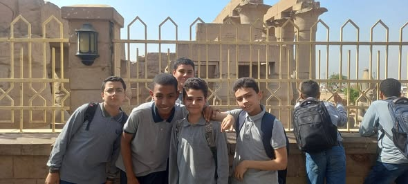
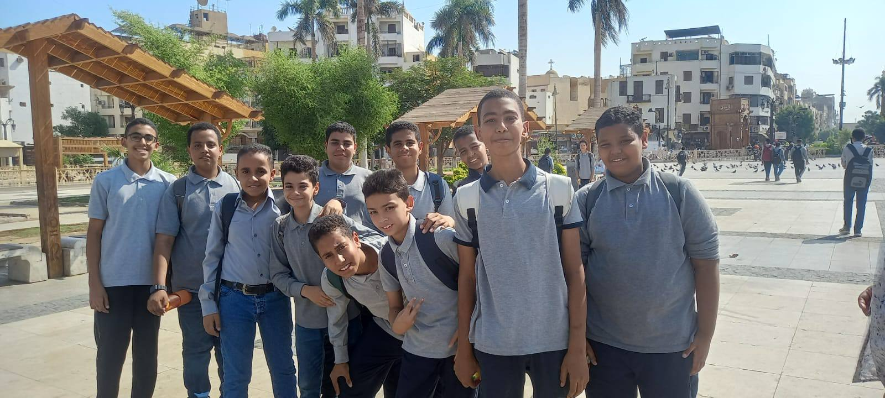
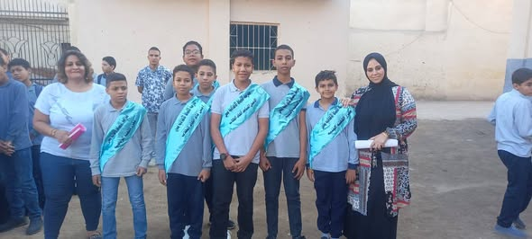
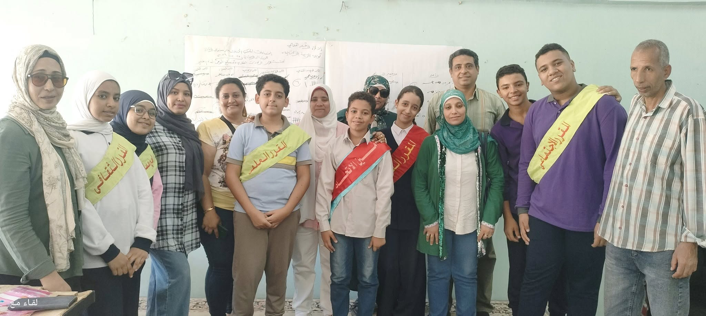
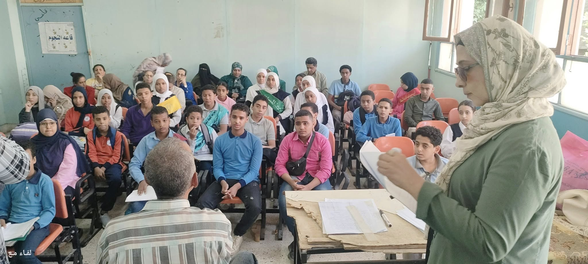

" جماعة بيت العائلة " استكمالا للجهود التى بذلتها أصدقاء بيت العائلة فى دعم المحبة والتعاون بين الطلاب وعدم السماح لأى فتن وتدخلات عصبية نظمت جماعة بيت العائلة تحت قيادة المدير الفاضل/ أ. ياسر على وتحت إشراف الاستاذة/ أمانى نعيم مسؤول الجماعة زيارة مميزة الى مسجد سيدى أبو الحجاج الأقصرى بصحبة ٢٠ طالب تحت إشراف الاستاذة/ هالة مسعود والاستاذة / هاجر محمد
رابط الفيسبوك


👊الاتحاد قوة 👊 تنصيب اتحاد الطلاب 🧑🤝🧑على مستوى المدرسة امس وأداء القسم📜 بكل قوة وشجاعة أمام الطلاب تحت إشراف الاستاذة/ ايرين جورج مسؤول الاتحاد
رابط الفيسبوك


عظيم الشكر والتقدير لموقع لقاء مع والقائمين عليه وكل الشكر للأستاذ/ احمد عبدالعال على تهنئتهم للطالب عبدالله ابراهيم ابن مدرسة الاقباط لحصوله على منصب امين اتحاد طلاب ادارة الاقصر مع تحيات الأستاذ/ ياسر سلطان مدير المدرسة
رابط الفيسبوك